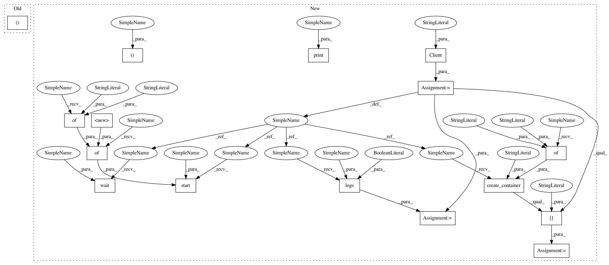

dd4ebd98a0026f626242f30cf9688d61b4798af1,mltsp/run_in_docker_container.py,,disco_test,#,382
Before Change
"--name=%s" % container_name,
"disco_test"]
process = Popen(cmd, stdout=PIPE, stderr=PIPE)
stdout, stderr = process.communicate()
print("\n\ndocker container stdout:\n\n", str(stdout),
"\n\ndocker container stderr:\n\n", str(stderr), "\n\n")
print("Process complete.")
After Change
try:
// Instantiate Docker client
client = Client(base_url="unix://var/run/docker.sock")
// Create container
cont_id = container_name = client.create_container(
"disco_test",
volumes={"/home/mltsp": ""})["Id"]
print(cont_id)
// Start container
client.start(cont_id,
binds={cfg.PROJECT_PATH: {"bind": "/home/mltsp"}})
// Wait for process to complete
client.wait(cont_id)
stdouterr = client.logs(container=cont_id, stdout=True, stderr=True)
print("\n\ndocker container stdout/err:\n\n", str(stdouterr), "\n\n")
print("Process complete.")
except:
raise
In pattern: SUPERPATTERN
Frequency: 3
Non-data size: 16
Instances
Project Name: cesium-ml/cesium
Commit Name: dd4ebd98a0026f626242f30cf9688d61b4798af1
Time: 2015-02-27
Author: a.crellinquick@gmail.com
File Name: mltsp/run_in_docker_container.py
Class Name:
Method Name: disco_test
Project Name: cesium-ml/cesium
Commit Name: dd4ebd98a0026f626242f30cf9688d61b4798af1
Time: 2015-02-27
Author: a.crellinquick@gmail.com
File Name: mltsp/run_in_docker_container.py
Class Name:
Method Name: predict_in_docker_container
Project Name: cesium-ml/cesium
Commit Name: ef24b500a80a7536beedcc63529a1999101a4ac4
Time: 2015-02-27
Author: a.crellinquick@gmail.com
File Name: mltsp/run_in_docker_container.py
Class Name:
Method Name: build_model_in_docker_container